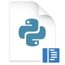

Model đề xuất hành động.
Con người nắm trọn quyền thực thi.
← quyền lực nằm ngoài prompt!
Một TurnEngine độc lập bằng Rust có capability chính thức, cơ chế duyệt lệnh rõ ràng, nút HALT khẩn cấp và biên nhận kiểm toán SHA-256 — quyền lực tuyệt đối không bao giờ giao phó cho prompt của AI.
rm -rf ./tmp/cache
e8b4...9f12 · Lưu trữ bất biến tại ~/.yana/audit.log
LUỒNG DỮ LIỆU THỜI GIAN THỰC
Từ mô hình AI đến tệp tin hệ thống.
Bộ lọc kiểm soát nằm ở trung tâm.
Model AI chỉ được quyền đưa ra đề xuất. Toàn bộ hành vi đọc/ghi tệp, chạy tiến trình shell hay can thiệp Git bắt buộc phải đi qua Yana TurnEngine.

Ollama Local (Llama 3)Yana Runtime Core
TurnEngine · Context Window · Authority Chain · Blast Radius Guard · Audit Receipt
TRIẾT LÝ ANY-AI ĐỘC LẬP
Đổi bất kỳ mô hình AI nào.
Giữ nguyên toàn bộ hệ thống của bạn.
Không bị khoá chặt vào OpenAI hay Anthropic. Bạn có thể linh hoạt chuyển đổi giữa Cloud API và Local Offline model mà không mất ngữ cảnh dự án.
Nhà Cung Cấp Trí Tuệ AI
Chỉ cần chọn provider, Yana tự động điều hướng mà không cần bạn phải tra cứu catalog phức tạp.
Ngữ Cảnh & Quyền Hạn Bất Biến
Dù đổi sang model nào, toàn bộ kiến trúc an toàn bên dưới vẫn được bảo toàn nguyên vẹn 100%.
- ✓ Mission & Kế hoạch dự án (Plan DAG)
- ✓ Project Memory (L1 Atomic & L2 Session)
- ✓ Authority Chain & Action Gate
- ✓ Chuỗi bằng chứng Audit Receipts (SHA-256)
BLAST RADIUS POLICY
Kiểm soát bán kính ảnh hưởng.
Chặn đứng sai lầm trước khi xảy ra.
Mã nguồn tại src/guard/blast_radius.rs tự động đo lường số lượng tệp và mức độ rủi ro của từng câu lệnh trước khi thực thi.
Thao Tác Đọc (Read)
Xem tệp tin, tìm kiếm văn bản ripgrep, kiểm tra git status. Được phép thực hiện ngay lập tức mà không làm phiền bạn.
Ghi Tệp Trong Workspace
Chỉnh sửa các file được phép trong phạm vi dự án. Yana hiển thị diff trực quan để bạn kiểm tra.
Lệnh Build & Deploy
Chạy các công cụ đóng gói Docker, npm build, git push. Bắt buộc người dùng bấm xác nhận trực tiếp.
Lệnh Phá Hủy Hệ Thống
Lệnh rm -rf, DROP TABLE, xoá nhánh git. Tự động KHÓA và kích hoạt còi báo động.

Sẵn sàng đưa AI vào khuôn khổ?
Trải nghiệm Yana Runtime ngay hôm nay.
Cài đặt siêu nhanh chỉ với một câu lệnh qua Rust Cargo package manager.